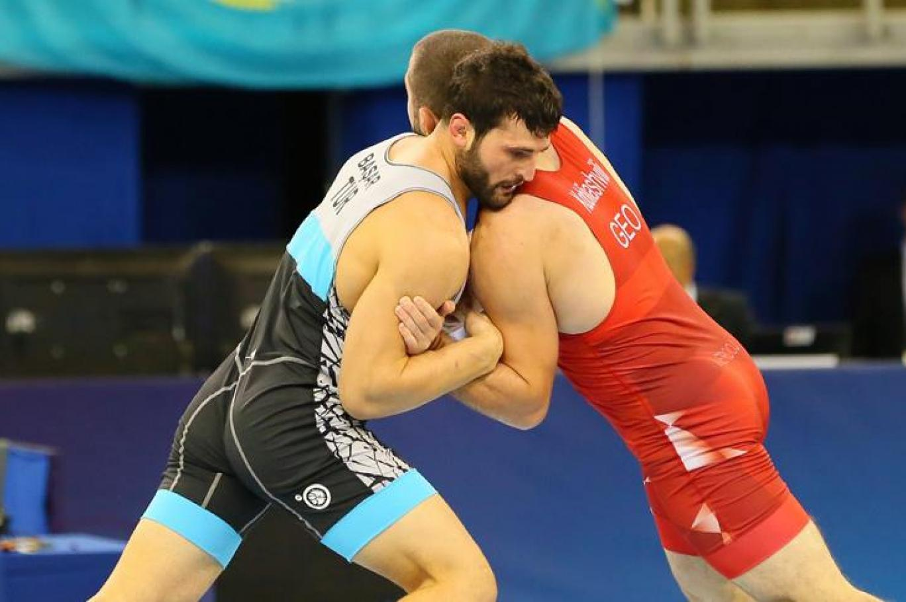

Stiller; Greko-Romen ve serbest stil olarak adlandırılmaktadır. Greko-Romen stilinde müsabaka sırasında ayak kullanılmamakta yalnızca belden yukarısı ile güç uygulanabilmektedir. Serbest güreş stilinde ise vücudun her kısmı oyuna dahil edilebilmektedir. Serbest stil, Türkiye’deki geleneksel güreş türleri ile oldukça benzerlik göstermektedir. Greko-Romen stilinde yarışan Türk sporcular da bulunmaktadır. Koca Yusuf ve Kara Ahmet, Greko-Romen stilini kullanan ilk Türk sporcular arasında yer almaktadır. Ayrıca Beşiktaş Spor Kulübü de 1903 senesinde Greko-Romen stilini kullanmıştır. Greko-Romen ve serbest stil dışın da ağırlık sınıflamasına göre 10 ayrı dalda yapılmaktadır. Ağırlık sınıflamasına göre yapılan güreşler; 48 kilogramdan başlayıp 100 kilogram ve üstüne kadar devam etmektedir. Türkiye’de yaygın olarak yapılan geleneksel güreşler ise; aba güreşi, şalvar güreşi, karakucak güreşi ve yağlı güreştir. Aba ve şalvar güreşleri isimlerini yarışmacıların giydiği kıyafetlerden almaktadır. Aba güreşi sırasında güreşçilerin sırtında aba adı verilen, kolsuz bir giysi bulunmaktadır. Şalvar güreşinde ise güreşçiler mindere şalvar ile çıkmaktadır. Ayrıca güreşçilerin belden yukarısı da çıplaktır. Karakucak güreşi, Türklerin milli güreşi olarak bilinmektedir. Olimpiyatlarda yer alan serbest güreş stili ile benzerlik göstermektedir. Yağlı güreş ise en yaygın geleneksel güreş müsabakasıdır. Oyuncular yağlı güreş esnasında vücutlarına yağ sürerek ve özel bir giysi giyerek mindere çıkmaktadır.
Güreş müsabakalarında iki sporcu minder adı verilen platforma çıkmaktadır. Bu minderin en az 4 santimetre kalınlığında olması gerekmektedir. Ayrıca minder genişliğinin de 9 metre çapında olması gerekmektedir. Oyuncular dışında yalnızca hakemler bu minderin üzerinde durup, müsabakayı takip edebilmektedir. Güreş, yarım dakika arayla ve 2 devre halinde oynanmaktadır. Her devre 3 dakika sürmektedir. Devrelerde eşitlik sağlanması durumunda ise sporculara bir devre daha verilmektedir. Güreşin temel amacı, karşı tarafın iki omzunu birden mindere yapıştırmaktır. Bu eylem güneş terimleri içerisinde “tuş etmek” olarak tabir edilmektedir.
Güreş oldukça disiplinli ve sert kurallar ile yapılmaktadır. Bu kuralların başında temizlik ve titizlik gelmektedir. Buna göre sporcuların tırnak ve sakal uzatmaları kesinlikle yasaktır. Terlemiş oyuncunun mindere çıkmasına izin verilmemektedir. Ayrıca yağlı güreşler dışında vücuda herhangi bir kayganlaştırıcı sürmeye de müsaade edilmemektedir. Sporcuların karşı taraf zarar verebileceği aksesuar kullanmaları da yasak olan kurallardan birisidir. Güreşçilerin mayolarında mendil taşıma zorunluluğu bulunmaktadır. Güreşte galip olmak için rakibi tuş etmek ya da 10 puan öne geçmek yeterli sayılmaktadır. Güreş müsabakası sırasında yapılan puanlamalar rakibin düştüğü güç durumlar gözetilerek yapılmaktadır. Oyunu tuş yaparak kazanan güreşçi hiç puan kaybetmeden kazanmış sayılmaktadır. Toplamda 5 puan kaybeden güreşçi ise maçtan yenilmiş olarak ayrılmaktadır. Maçlar, minderin kenarında bulunan jüri tarafından takip edilmektedir. Oyun hakemi, jürilere yarışmacılar için puan teklif etme hakkına da sahiptir. Maçın son devresinin de eşitlik ile sonuçlanması durumunda kazanan güreşçi hakem kararıyla belirlenmektedir.